사람은 얼마나 많은 클래식의 제목을 알아야 하는가?
25/06/2022
고등학교 다닐 때 잠시 클래식 음악을 좀 들어봐야겠다는 생각에 도이치 그라모폰의 하얀색 음악 테이프들을 사 모으던 적이 있었다. 그때 기억으로는 하나에 2,500원 정도 했던 것 같고 용돈이 모이면 아까운 줄 모르고 샀던 기억이 아련하게 남아 있다. 대학 때 부터 집을 떠났으니 그 후 몇 번의 이사로 그 베토벤, 차이코프스키 그리고 슈베르트들은 간 곳을 모르게 되었고 40년 가까이 되었으니 설령 지금 남아 있다 할 지라도 이미 자기 테이프가 늘어져, 정작 소리는 기대할 것이 안 될 것이다.
그 시절에 음악을 듣기 위해선 근본적으로 음반을 사야 했기 때문에 접근할 수 있던 음악의 양 자체가 제한적이었다. 그래서 내가 아는 음악이란 것이 아는 것만, 조금 더 정확히는 내가 가지고 있던 고작 30개도 안 되던 테이프에 한정되어 있다는 사실에 어느 정도 항상 주눅이 들어 있었다. 그런데 KBS 1FM을 듣다 보면 어떻게 다들 그렇게 잘 아는지 이름도 생소한 온갖 곡이 청취자 신청곡으로 올라왔고 그때 마다 대체 얼마나 더 많은 음반을 사야 음악 좀 듣는다는 그룹에 이름이나 내밀 수 있을까 내심 부끄럽기까지 했다.
하지만 드디어 대 유튜브 시대가 왔다. 온갖 클래식 공연 실황이 온라인에 쌓여 있고 예전에는 이름만 알고 있던, 직접 들어 보려면 큰 맘 먹고 사야 했던 음악들을 클릭 한 번으로 시작하곤 또 스킵해 버릴 수 있게 되었다. 유튜브에 절여진 지 한 1년, 대체 나는 어느 정도의 클래식 음악을 알고 있는지 궁금해졌다.
사람은 얼마나 많은 땅이 클래식 지식이 필요한가.
- 목적은 내가 한국의 일반적인 클래식 애호가의 지식 수준에 비추어 어느 수준인가를 확인하는 것으로 하자.
- 한국의 일반적인 클래식 애호가 집단에 대한 표본은 KBS 1FM 청취자 중 신청곡이 방송된 사람으로 한정한다.
이제 KBS 1FM 의 신청곡 history를 긁어다가 내가 그 중 얼마나 많은 곡을 알고 있는지 확인해 보면 되겠다.
일단
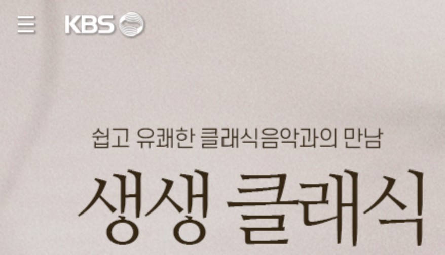
에서 선곡표 history 를 찾아 헤매다
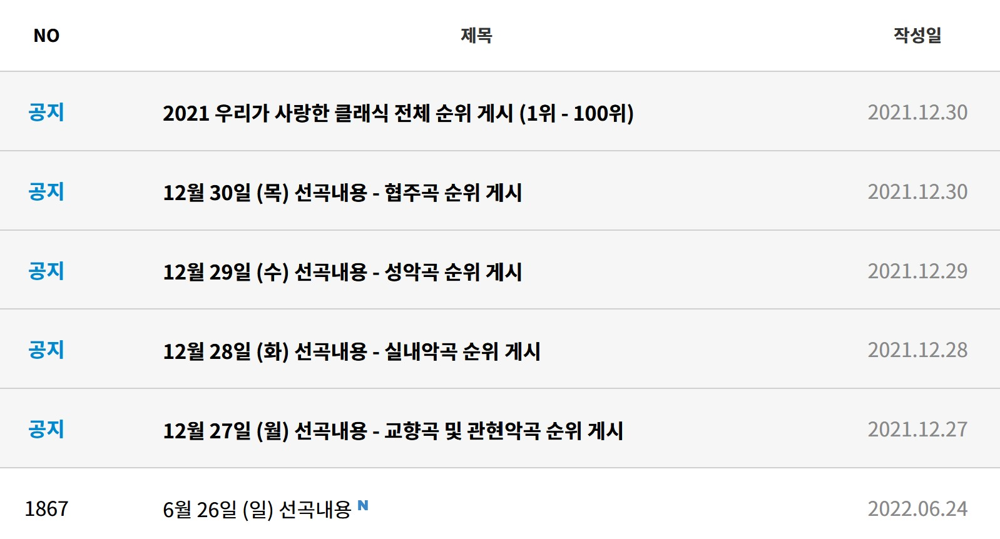
를 발견했다.
아아, 이미 이런 생각을 다들 했구나. 뒷북을 쳤다는 민망함은 잠시 접어두고 전체 순위 100위 중 얼마나 알고 있는지 보자.
소리로 제목을 맞출 자신이 있는 것만 O 로 표시하기로 한다.
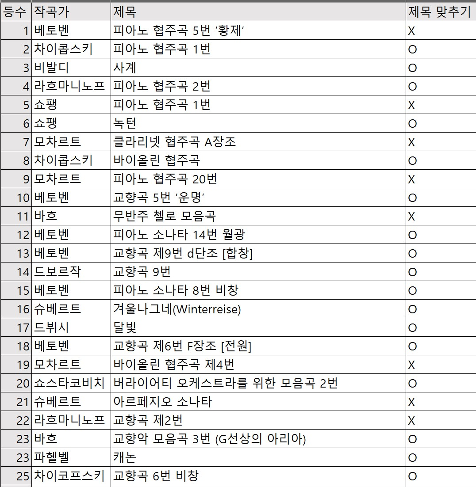
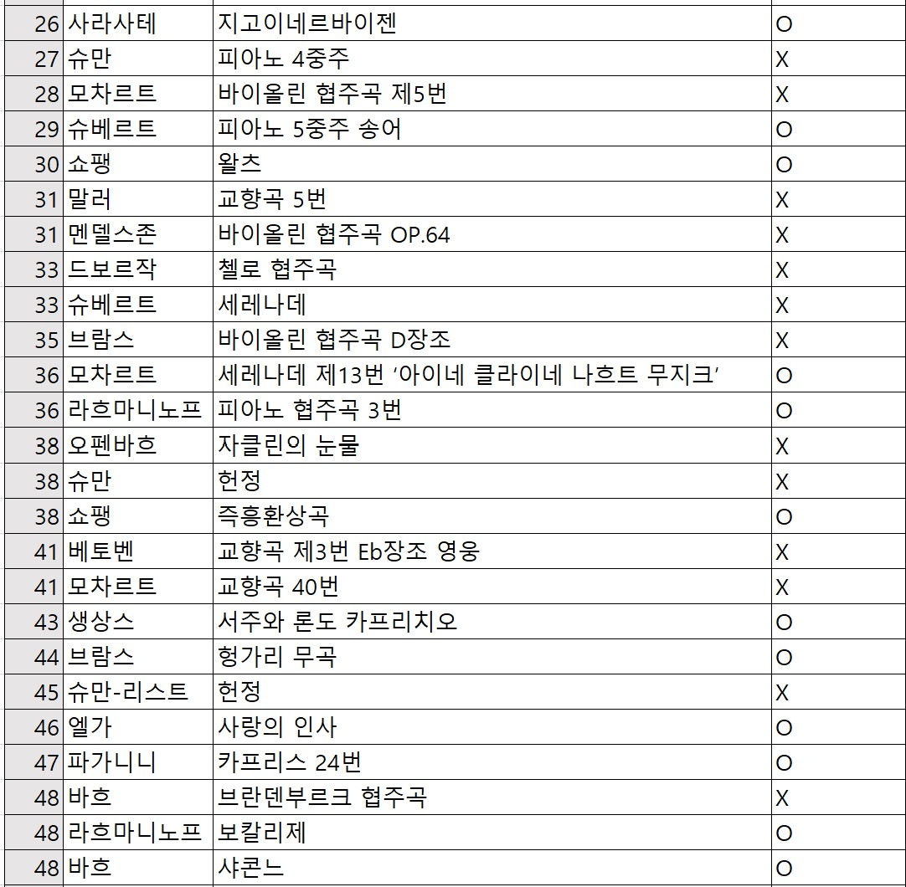
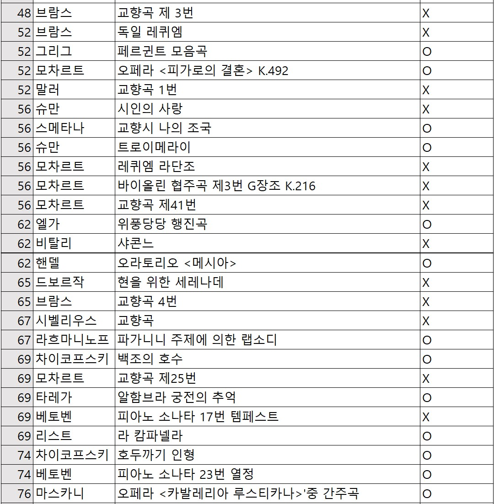
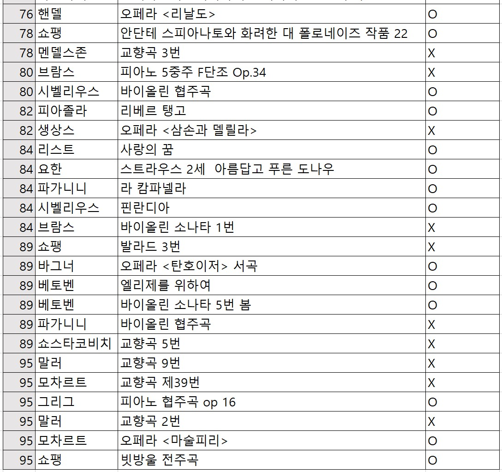
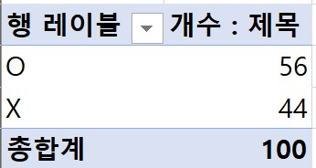
60점도 안 되다니. 더 열심히 정진하도록 하자.
일단
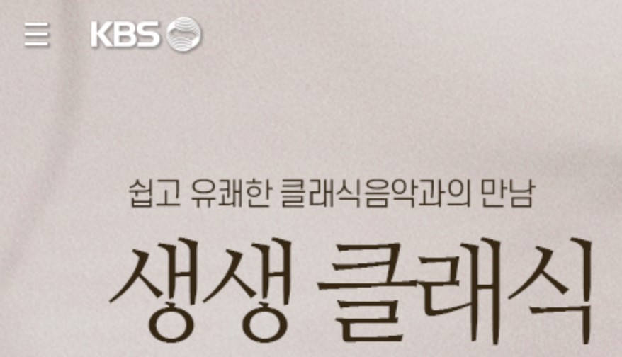
에서 선곡표 history 를 찾아 헤매다
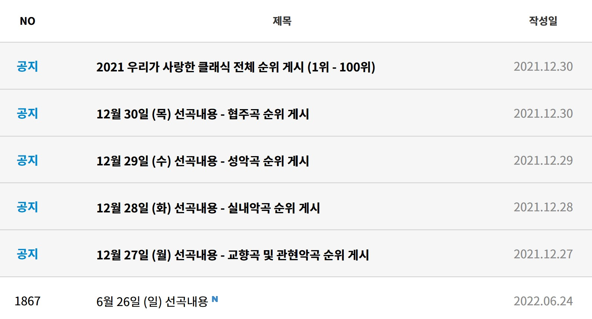
를 발견했다.
아아, 이미 이런 생각을 다들 했구나. 뒷북을 쳤다는 민망함은 잠시 접어두고 전체 순위 100위 중 얼마나 알고 있는지 보자.
소리로 제목을 맞출 자신이 있는 것만 O 로 표시하기로 한다.
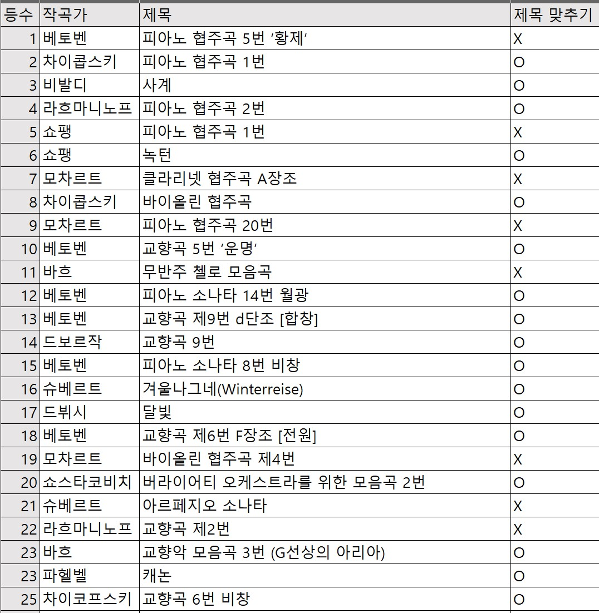
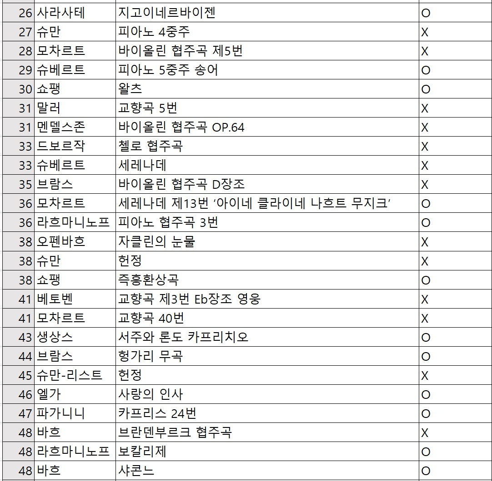
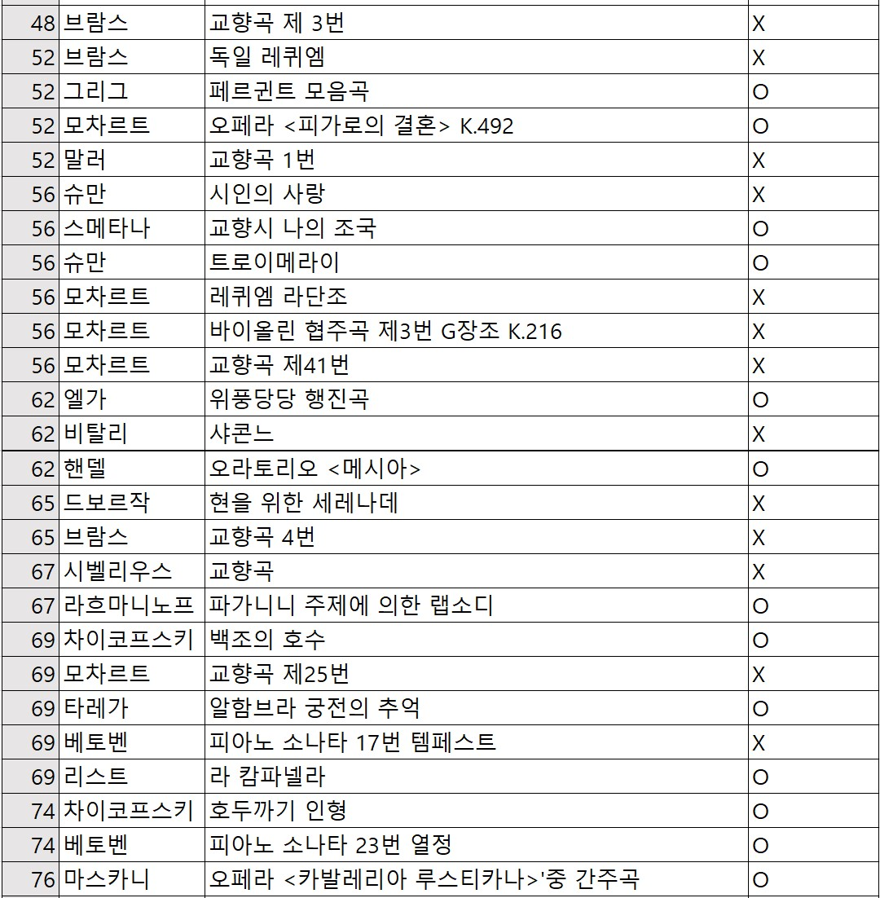
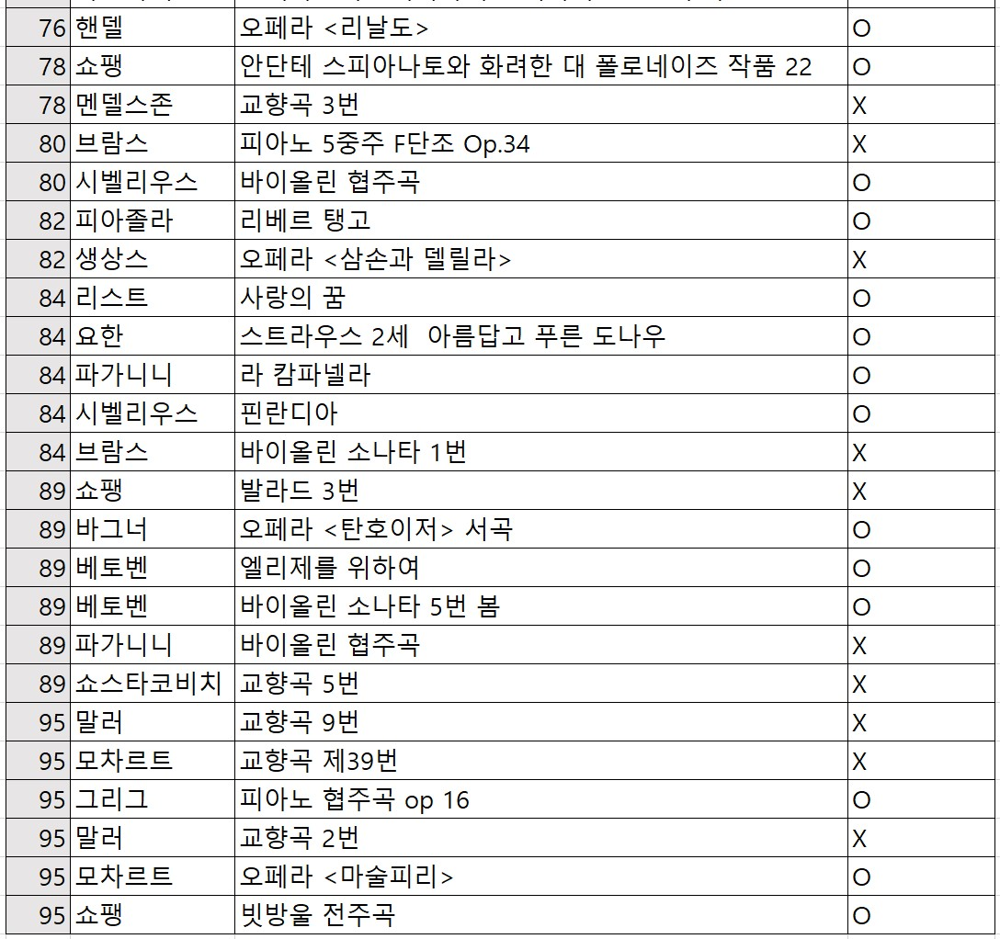
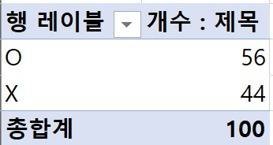
60점도 안 되다니. 더 열심히 정진하도록 하자.